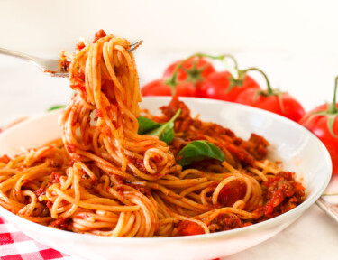

Secret Italian Spaghetti
A Taste of Italy in Every Bite!
In the realm of culinary enchantment, Odin, the Greek god of wisdom, crafted a legendary spaghetti recipe, capturing the essence of Italy in divine flavors. Mortals from distant lands sought this coveted secret, and those who tasted the mythical dish found themselves transported to a realm of gastronomic ecstasy. Passed through generations, Odin's spaghetti remains a shared secret, connecting families to a mythical world where a Greek god bestowed his wisdom upon the art of Italian cooking.
Today, its divine aroma lingers in kitchens worldwide, perpetuating the legend of a spaghetti recipe born from the hands of a god.